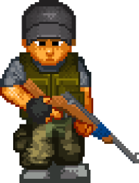
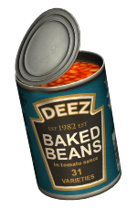
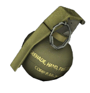

Bem-vindo ao DayZ Wiki 🧟
Esta é a sua história. Aqui você encontrará a fonte mais completa de informações sobre DayZ, incluindo o título DayZ, best-seller da Bohemia Interactive, e o clássico Arma 2 DayZ Mod, que deu início a tudo.
Dicas e Observações

Este site tem o próposito de ajudar pessoas iniciantes/veteranos.Além de promover o jogo DAYZ e fortalecer a comunidade com mais conteúdos sobre o jogo, e principalmente o público brasileiro. Também tenha a consciência que é um site teste. Fique a vontade e uma boa caçada á todos.
Só fique em alerta!, não confie em todos os players que você encontrar. Existe uma comunicação no jogo por sinais. O jeito de Verificar se o cara é amigavel Aperte a tecla F1 assim seu personagem levantará a mão, por tanto se o outro player levantar a mão ele provavelmente seja amigavel, mas a primeira regra do dayz é: NÃO CONFIE EM NINGUÉM.

Não carregue tantos itens com você, aumentará seu peso e por enfim influência sua estâmina, que logo tem haver com o quanto você pode correr, pular e lutar . Além disso, se você não for organizado, provavelmente não vai ter espaço em sua mochila. Então guarde só o necessário!

cuidado! , ao carregar itens como granada em suas roupas ou mochila,você pode explodir ao tomar algum tiro na região que você guardou a granada!
Noticias📰
A atualização 1.21 já está disponível!A atualização 1.21 está disponível para PC/Xbox Experimental! DayZ em 2023 - A atualização de estabilidade 1.20 da atualização do desenvolvedor já está disponível!